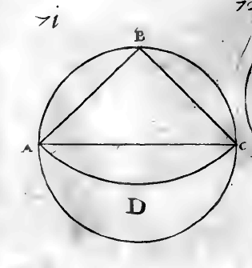

Proposition IV: Hippocrates’ Lune on an Isosceles Right Triangle¶


Proposition IV · Theorem IV (Tab. 8, Fig. 71)
- If in one of the opposite semicircles of the same circle two sides of an inscribed square be applied, and in the remaining semicircle an arc be made whose radii are the said sides;
the isosceles right-angled triangle constituted by those applied chords and the diameter will be equal to the space lying between the convex and concave circumferences.
Let there be circle ABCD, and let AB, BC be sides of an inscribed square applied to semicircle ABC, so that from these and diameter AC is formed the isosceles right triangle ABC; then with center B and radius BA, or BC equal to it, let arc ADC be described. I say that triangle ABC is equal to lune D, namely to that space which between the concave circumference of the supposed circle and the convex circumference of the described arc
f. 0083 · p. 66is interposed. For it has been shown in the second proposition of this appendix that quadrant BAC is equal to semicircle ACD; if therefore the common space be taken away, triangle ABC will remain equal to lune D, Q.E.D.